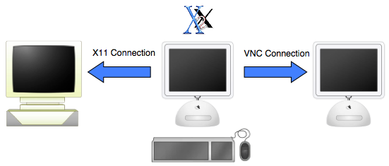
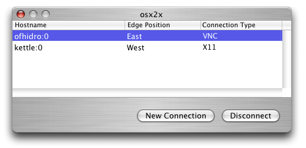
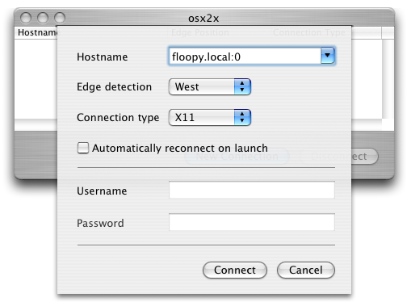

Current version: 2.2.0
Welcome to osx2x. osx2x is an application designed to help people with multiple computers on their desk free up some desk space by reducing the number keyboards and mice they need. It allows the user to use just the keyboard and mouse on their Mac OS X machine to control another machine running either an X11 server or a VNC server.

For example, in the above setup, the left machine runs X11 and the right machine runs Mac OS X with a VNC server running. The keyboard and mouse of the middle machine, running osx2x, can be used to control the left and right machine by forwarding any input from the middle machine to the other two. Better yet, osx2x can be set up so that you just move the mouse off the left on the middle machine's screen and it appears to move the cursor on the left hand machine as if it where one continuous desktop!
To run osx2x you need:
The below diagram shows the main osx2x window. It is a very basic interface, with only three widgets:

The top section lists the current connections made. In the above picture the user is connected to a VNC server on a machine called ofhidro and to an X11 server on a machine called kettle. The edge position field notes that if the mouse is moved off the east side of the controlling machine's screen it will start working on the machine called ofhidro, and if moved off the west side of the screen it will start controlling kettle.
The two buttons on the main window allow you to create a new connection, or to close an existing connection. When you click the New Connection button you will see a panel like the one shown below:

The first entry in the panel is used to specify the target host which you wish to control, specified in the form of hostname:screen-number, similar to the format used in the first screen shot. If you drop down this combo box, you should see the last five servers you connected to, and selecting one will update the rest of the panel to the settings you last used with that server. The next item is for enabling edge detection. There are five options here: None, East, West, North, or South. With None selected, osx2x will require you to use a keypress to toggle when keyboard and mouse events are sent to the X Windows server. If you enable either East, West, North, or South then osx2x will let you move the mouse off that side of the screen and then control of remote host will be activated, moving the cursor to the opposide edge of the remote display, creating the illusion of a single contiguous desktop. The third item lets you specify whether you are connecting to a X11 or VNC server.
The fourth item allows you to tell osx2x to automatically reconnect to this server, if it is available, next time you launch osx2x. This saves you having to open a regular set of connections every time you run osx2x. You can also enable or disable this option for active connections from the connection menu.
The next two fields are used for authentication, used depending on the connection method used. Currently no authenication is used for an X11 connection, and only the password field is used for VNC authentication. Finally there is a connect button to attempt the connection and a cancel button to not do the connection.
The following steps indicate how to use osx2x. To make the description easier, we assume you have two machines named machost and either xwindowshost or vnchost, on which you are running osx2x and either an X Windows server or VNC server respectively.
When you move onto a remote session, you will see a translucent arrow appear on your monitor indicating off which side the cursor is. This is to aid you finding the cursor should you lose track of it (e.g., you return from getting coffee :). Unless you explicitly close it, the osx2x window will also pop up when you move the cursor onto a remote session. This was a requirement before version 2.1, but that is no longer the case, so you should close the osx2x window once you have finished adding any servers you want to the list. You can get the window back again by clicking on the osx2x icon in the dock.
While osx2x is in the foreground (regardless of whether keyboard events are being forwarded or not) it can be used to copy and paste data between the Mac OS X pasteboard and the X Windows clipboard (this functionality currently works with X11 remote hosts). Command-c will copy the contents of the current X selection from X Windows server to the Mac OS X pasteboard. Command-v will cause osx2x to have the active clipboard selection on the X Windows server.
There are currently four items that can be set in the Preferences window:
osx2x uses the standard X Windows XTest functionality to send events from the Mac to the X Windows server; without this then some custom software would have to run on the X Windows host, which would limit the ability of osx2x to connect to clients without caring about the remote machine type. Unfortunately, XTest is not secure, so all keyboard and mouse events are transmitted in plain text between the two machines. The same is true of the VNC protocol. This is of particular importance if you use a WaveLAN network without WEP encryption. Thus, the user should be aware of this when typing possibly sensitive information such as passwords on the remote session.
The clipboard/pasteboard functionality currently only supports data of type XA_STRING.
osx2x is licensed under the terms of the BSD License.
osx2x is Copyright 2002, 2003, 2004 by Michael Dales